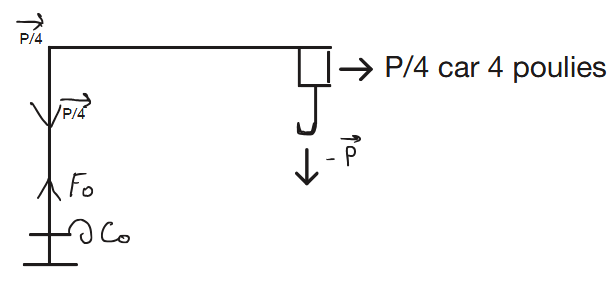

Calcul déterminant la force de la personne nécessaire pour soulever la charge :
Poids de la charge :
P = mg = 300⁄10³ × 10 = 3N
Force maximale par poulie :
Fmax/Pa = 3⁄4 = 0,75N
Masse équivalente :
Masse = 750g de force
Longueur de corde nécessaire :
Longueur de corde tirée = hauteur × nombre de poulies = 0,4m × 4 = 1,6m
Calcul de la force opérateur :
C₀ = F₀ + Br, sachant que Br = 1,5
∑F = 0
⟺ -P⁄4 + F₀ × Br = 0
⟺ F₀ = P⁄4 × 1⁄Br
= P⁄4Br = (300 × 9,81)⁄(4 × 1,5)
= 490,5N
= 50 kg de force

Conclusion
L'ouvrier faisant fonctionner la grue devra avoir une force minimum de 50kg pour soulever la charge, ce qui est réalisable.